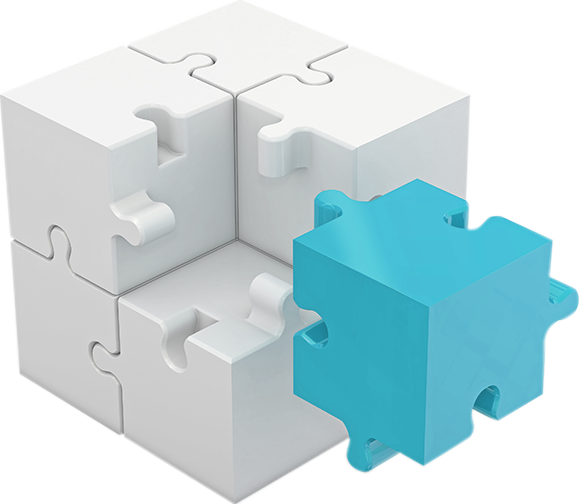
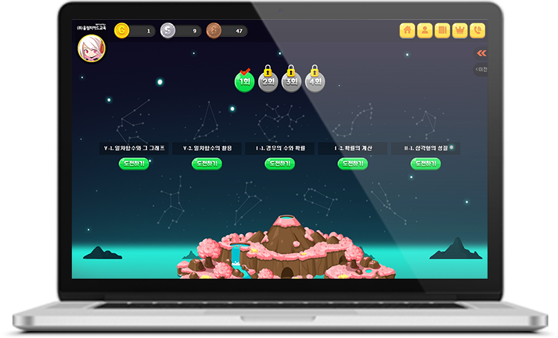

초등부터 대입까지
흔들리지 않는 수학 실력을 쌓아갑니다.
개념이해부터 최상위권 문제까지 빈틈없는 학습컨텐츠로
올림피아드학원만의 특별한 수업을 진행합니다.
수학 개념과 원리를 제대로 가르치기는 쉽지 않습니다.
올림피아드는 학생의 실력에 맞춰 수준별, 단계별로 개념을 지도합니다.
학생중심 참여수업으로 능동적 학습태도 촉진
지필고사보다
수행평가가 확대됩니다.
팀별 활동과 발표를 경험해보지 못한 학생의 성장을 돕습니다.
초등수학부터 토론발표 수업을 필수로 진행합니다.
수준별 수업을 통해 개인별 취약영역을 보완합니다.
수준별 맞춤교재, 개인별 오답 맞춤 교재
1:1 첨삭지도로 완전학습 구현
생활 속 여러가지 상황이 수학과 결합된 문제를 풀어보고 창의적인 해결을 통해 사고를 확장합니다.
전자 칠판 및 개인별 단말기를 통해 학습효과를 높입니다. 온·오프라인 블렌디드 러닝 시스템을 구축하였습니다.
